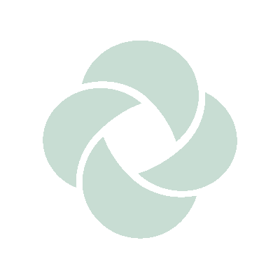

Cada quien aporta lo que sabe hacer
Alianzas por función, con evidencia y rendición de cuentas en cada aporte.
Cada quien aporta lo que sabe hacer
Como en San Gabriel, ningún avance fue individual. Buscamos alianzas por función, con evidencia y rendición de cuentas en cada aporte.
Comunidades y cooperativas
Necesidades, acceso a sitio y operación local.
Universidades y centros
Formación, ensayos e investigación conjunta.
Empresas
Equipos, integración, patrocinios y retos tecnológicos.
Gobiernos y autoridades
Coordinación e interlocución según sus atribuciones.
Diez formas de trabajar con el Centro
- Talleres CanSat y de datos
- Kits didácticos con formación
- Diagnósticos energéticos
- Puesta en marcha de tableros
- Monitoreo y mantenimiento por suscripción
- Informes territoriales por encargo
- Patrocinio de retos y becas
- Laboratorio de prototipado bajo convenio
- Convocatorias y consorcios
- Validación de sensores, electrónica y datos en campo
Aportaciones monetarias o en especie: sensores, vuelos para ponentes, espacios de formación, conectividad, becas y materiales. Cada oferta se revisa frente al objeto social y el régimen fiscal vigente.

Soñemos en grande, desde la bahía
Si representas a una comunidad, institución o empresa y quieres explorar un proyecto, escríbenos. Respondemos con una ficha breve y un siguiente paso concreto.
La Paz, Baja California Sur, México
contacto@cicvives.org
cicvives.org